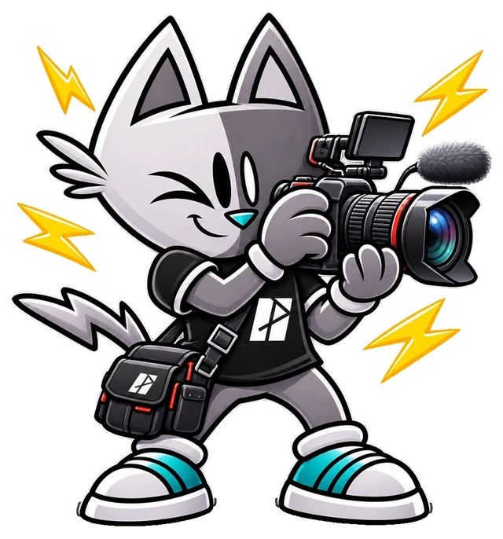

Irmãos McCoy e a versão da “When You Got a Good Friend”, de Robert Johnson
O grupo de Rock e Blues , da cidade de Batatais-SP , Irmãos McCoy , sempre teve o costume de utilizar das suas referências para criar na música autoral. A personalidade…
Publicação independente

O grupo de Rock e Blues , da cidade de Batatais-SP , Irmãos McCoy , sempre teve o costume de utilizar das suas referências para criar na música autoral. A personalidade…
Quem pôde pegar estrada, no dia 17 deste mês de agosto, e avançar alguns poucos quilômetros da cidade de Batatais-SP, através da Rodovia Altino Arantes – na direção que…
Com sonoridade tranquila e própria para ser escutada na areia, a beira do mar, sentindo o dia acabar. Assim é a canção “ Mensagem Improvisada ” do cantor e compositor…
Em busca de cantar sobre a terra, o interior e, ao mesmo tempo, beber das influências que vão de Milton Nascimento , Beto Guedes , 14 BIS , até bandas do rock…
Dançante e com alegria que contagia, DJ Mystical (Ricardo Augusto) lançou a faixa “ Rio de Janeiro “. Com elementos que parecem pintar um quadro da cidade a qual a…
Muitos momentos são cruciais ao longo da vida. A tomada de uma decisão não é coisa fácil, porém necessária. É com essa temática que a banda The Manic Dolls lançou a…
Muitas vezes a vida coloca vários caminhos na frente para serem escolhidos. E nem sempre a escolha é fácil de ser feita. A decisão acaba gerando insegurança. Diante…
Quem nunca teve a dificuldade para superar uma paixão? Ficar pensando na pessoa, sem querer que ela esteja lá. Não conseguir fazer mais nada no dia, sem pensar em alguém…
Com muita energia e crítica social, o dia a dia da periferia é retratado no single “ Diabo de Farda ” do cantor e compositor de hip hop , Blanco . O single é uma…
Dando sequência nos lançamentos planejados para este ano, a cantora e compositora Julia Smith apresentou a faixa pop “ Meu Erro “. Além da canção, a artista também…
A prisão que vem de dentro. Na introspecção, em uma sensação circular, onde tudo se repete, se mexe, ali mesmo, no interno, por dentro de si, mas sem nada acontecer.…
Amores não correspondidos, ou aqueles em que a reciprocidade aos poucos acaba. Em determinado momento, uma das parte percebe que apenas um está se doando. O medo de se…
Em um futuro não muito distante, uma distopia a qual já sentimos ditar as regras atuais em um horizonte nublado, não apenas para o quesito clima/tempo, mas também para a…
Sensação de aprisionamento. Tanta coisa acontecendo do lado de fora do quarto. A ideia de estar perdendo algo e não conseguir sair para vivenciar tudo isso. As paredes…
O inverno, muitas vezes, é doloroso. O frio machuca, isola e deprime. Muitos por estarem recolhidos em suas casas, acabam deixando de se encontrar com os amigos. É uma…
Recentemente, a cantora e compositora Joice Terra lançou seu álbum “ De(Vagar) ”. Para realizar o lançamento, a artista apresentou um show ao vivo, onde cada uma das…
Por: Vinícius Aliprandino Que tal pegar uma cadeira para se sentar e relaxar no seu bar favorito, apreciando o movimento da rua no lado de fora, enquanto o tempo passa,…
Fechar cicatrizes e destruir fantasmas. Escrever, ler, enviar, seja quem ou para quem for, as cartas que relatam o sofrimento, a perseguição a luta a superação de alguém…
“ Olhando o mundo por outra perspectiva ” – essa é a palavra chave para entender que nem sempre as coisas funcionam da maneira como gostaríamos, ou que pelo menos antes…
Você já teve aquela sensação de estar preso à tela do seu celular? Ficar por horas rodando o feed do Instagram pra baixo e, de repente, se deu conta de que perdeu muito…
Ter uma ideia inesperada de cair na estrada ao lado de quem ama, em direção a uma cidade do litoral, para passar ótimos momentos de verão e criar lembranças e conexões.…
A necessidade de estar em evidências, de se mostrar feliz, de, muitas vezes, se mostrar melhor do que o outro. Todas essas e muitas outras questões de exibicionismo…
Por: Vinícius Aliprandino Com 10 anos de estrada e após 4 anos do lançamento do último álbum “ Supersimetria ”, o duo de synthpop e dream pop , S.E.T.I, ressurge de…
A calmaria em meio à tempestade. Que chega como uma brisa tranquila e leva toda a preocupação, correria e desespero embora. Como se com o simples toque, fizesse tudo se…
Mostrando 24 de 876